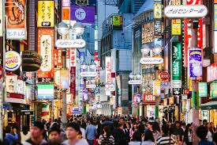

#Fasion Is What You Buy Style Is What You Do With It!!
#Hottest Picks By Star Stylish!!

The insider Melbourne/NY interiors stylist Glen Proebstel (glenproebstel.com).
What's hot A great events calendar. 92/100 for hotels and transport.
What's not Few sales and super-high hotel, transport and dining costs. 20/100 for affordability.
The address book Claska Gallery and Shop is the perfect destination to sample the best of local and international design makers and crafters (claska.com). New York fashion store Opening Ceremony opened a Tokyo branch that's a must-visit (openingceremony.us). For beautifully chosen industrial vintage, visit Journal Standard Furniture (js-furniture.jp). As the name says, I Find Everything Tokyo (ifindeverythingtokyo.com). Fog Linen Work has been a recognisable brand in many boutique homeware stores throughout Australia, but nothing compares to visiting where it all began (foglinenwork.com).
Getting there Fly Sydney to Tokyo direct with Qantas (qantas.com) or with Jetstar, via Gold Coast or Cairns (jetstar.com).
Staying there The Park Hotel Tokyo is a soothing oasis amid the neon (en.parkhoteltokyo.com).
More info jnto.org.au.